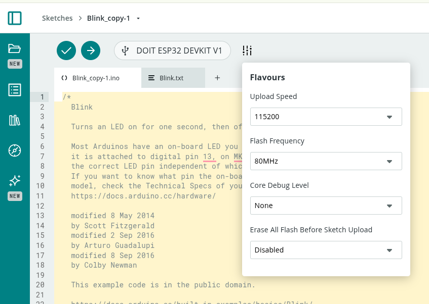

IoT for Product Design
📊 Course Slides: Download Presentation Slides (PDF) | View Slide Source (Marp Markdown)
Course Agreement & Ground Rules
- Use of AI is perfectly fine, but it is not an excuse to do not understand
- At the end I want to see a physical product made of real interconnected things
- No validation is unacceptable and dangerous
- Validation needs measures, not generic sentences
1. Purpose
This set of exercises introduces product design students to the Internet of Things (IoT) through hands-on work with ESP32 boards programmed in Arduino. It has two goals:
- From smart objects to ecosystems. Show that sensors, actuators and connectivity let us build an ecosystem of cooperating objects, not just isolated smart objects. The value comes from the relationships between objects, people and services.
- From data to better products. Show that the data IoT devices collect can improve the design, development, use and maintenance of a product or service, closing the loop between the designer and the product in the field.
The path goes step by step. Each exercise introduces one or two new concepts and reuses the skills from the previous ones. Every exercise ends with a short design reflection, because the aim is to train designers who understand what the technology makes possible, not to train embedded engineers.
The connected parts of the course are built on an open standard, MQTT, rather than on a proprietary platform. The class is made of designers with little experience of programming tools, so the priority is to keep the number of tools, accounts and concepts as low as possible. Four tools are used, each with a clear role:
| Tool | What it is for | Limits |
|---|---|---|
| Wokwi (browser simulator) | Sketching and trying behaviour, with no hardware and no risk — including Wi-Fi and MQTT | Limited number of simulations on the Free plan |
| Arduino IDE 2 (desktop app) | Uploading to the real board, Serial Monitor/Plotter, unlimited uploads | Does not create dashboards |
| MQTTX (desktop / web app) | Looking inside the network: watching every message of the studio, sending commands by hand | A debugging tool, not an interface for end users |
| ThingsBoard (demo server) | Only when necessary: dashboards for other people, history, alarms, remote settings, fleet management | Shared public demo server: not for personal or sensitive data |
Objects talk to each other through a public MQTT broker (e.g. test.mosquitto.org): no account, no quota, and it works both from the real board and from Wokwi. ThingsBoard enters the course from Exercise 6, when the object must be used, monitored and configured by people who are not its programmers.
Setup notes. On Linux install pyserial for the upload tool: sudo apt update && sudo apt install python3-serial. In the Arduino IDE install the esp32 board package (by Espressif) and the PubSubClient library (by Nick O'Leary).
If necessary reduce the upload speed

Going deeper: the IoT course
Many topics of this course are treated in more technical depth in the IoT course notes. Where useful, exercises below have a Reference line pointing to the relevant page, e.g. Simulating a node, A real node, MQTT and ThingsBoard.
2. Running scenario: "The Connected Studio"
To keep the exercises coherent, they all share one scenario: a shared studio / co-working room that the class progressively "brings to life".
- Every group designs and builds one object for the studio, e.g. a desk lamp, a "focus" totem, a plant pot, a window/air-quality monitor, a doorbell/presence badge, a coffee corner counter, or a noise meter. All objects are described in the Studio Object Catalogue.
- In the first exercises each object works alone (smart object).
- Later the objects talk to each other through shared MQTT topics (ecosystem).
- Finally the objects are used for real for sometimes, and the data they produce is used to redesign them (data-driven design).
This scenario makes both goals concrete. Students experience first-hand what changes when their object is no longer alone, and when it starts "reporting back" how it is actually used.
3. Target audience and prerequisites
- Product design students (bachelor or master level) with limited experience of digital tools for programming.
- No prior programming experience is required. Variables,
ifand loops are introduced in Exercises 0–1, always starting from working examples that students modify rather than write from scratch. - Groups of 2–3 students, one hardware kit per group.
- Each student needs a laptop with a Chromium-based browser or Firefox, the Arduino IDE 2 (with the ESP32 package and the PubSubClient library) and MQTTX. From Exercise 6 each group needs a (free) account on demo.thingsboard.io. A smartphone with an MQTT dashboard app (e.g. IoT MQTT Panel, or the MQTTX web client in the browser) is useful from Exercise 5.
4. Hardware kit (per group)
The kit is split into two parts: a Core Kit containing the bare minimal interaction primitives (the 4 digital and continuous inputs/outputs) used by everyone from day one without any external libraries, and Specialized Project Modules introduced from Exercise 3 according to each group's studio object.
4.1 Core Kit (Universal — used from Exercise 0)
These components require zero external libraries and form the foundational 2×2 matrix of physical computing interaction:
| Discrete / Binary (0 or 1) | Continuous / Modulated (0 … Max) | |
|---|---|---|
| Input (Controls & Sensors) | Push Button (digitalRead, INPUT_PULLUP) |
Potentiometer (analogRead, 0–4095) |
| Output (Feedback & Actuators) | LED On/Off (digitalWrite, HIGH/LOW) |
LED Dimmer (analogWrite, PWM 0–255) |
This 2×2 foundation covers the universal vocabulary of physical product interfaces (switches, indicators, knobs, and dimmers) and maps 1-to-1 to the digital controls used later on phone panels and ThingsBoard dashboards:
| Interaction Primitive | Physical Component | Arduino Function | Digital counterpart (Phase B) |
|---|---|---|---|
| Digital Output | Standard LED | digitalWrite() |
LED / status indicator |
| Digital Input | Push Button | digitalRead() |
Button / switch (publishes a command) |
| Analog Input | Rotary Potentiometer | analogRead() |
Gauge / chart |
| PWM Output | LED Dimmer | analogWrite() |
Slider (publishes a value) |
Core Kit Components:
| Component | Interaction primitive | First used in |
|---|---|---|
| ESP32 DevKit (e.g. ESP32-WROOM-32 or ESP32-S3) | Microcontroller with Wi-Fi & Bluetooth | Ex 0 |
| Breadboard, jumper wires, USB data cable | Prototyping infrastructure | Ex 0 |
| Standard LEDs (red, green, blue) + 220–330 Ω resistors | Digital Output (digitalWrite) & PWM Output (analogWrite) |
Ex 0 / Ex 2 |
| Push buttons | Digital Input (digitalRead with internal INPUT_PULLUP) |
Ex 1 |
| Rotary potentiometer (10 kΩ) | Analog Input (analogRead, 0–4095) |
Ex 2 |
More on the board and on wiring: Reference hardware · Understanding the breadboard.
4.2 Specialized Project Modules (Introduced from Exercise 3)
Depending on the specific studio object each group designs (desk lamp, presence totem, air quality monitor, plant pot, etc.), groups select from these modules:
| Component | Purpose & Target Object | First used in |
|---|---|---|
| Light sensor (LDR with 10 kΩ resistor or BH1750 I2C) | Ambient light sensing (smart lamp) | Ex 3 |
| Temperature/humidity sensor (DHT22 or BME280) | Climate & comfort monitoring (air/plant monitor) | Ex 3 |
| PIR motion sensor | Presence & arrival detection (door badge, focus totem) | Ex 3 |
| RGB LED ring (WS2812 / NeoPixel) | Expressive multi-color visual output | Ex 3 |
| Servo motor (SG90 / micro-servo) | Physical motion, indicators, mechanical flags | Ex 3 |
| Piezo buzzer | Acoustic feedback and alerts | Ex 3 |
| Relay module (low voltage only) | Switching external appliances / lights | Ex 7 (optional) |
| Accelerometer (MPU6050, optional) | Handling, vibration, wear monitoring | Ex 13 |
| LiPo battery + charger (powering the ESP32, optional) | Autonomy, portable power monitoring | Ex 13 |
All components above are available in Wokwi, so every circuit can be simulated before it is wired on the breadboard.
CO₂ and noise are simulated. The kit has no CO₂ sensor (DHT22/BME280 do not measure CO₂) and no microphone. The co2 and noiseLevel values are therefore produced by turning the Core Kit potentiometer, which lets students stage repeatable scenarios, also in Wokwi. See Simulating CO₂ and noise with a potentiometer.
5. Software and network stack
5.1 MQTT first, ThingsBoard when necessary
The backbone of the course is MQTT, the publish/subscribe protocol used by most IoT products. Its mental model fits in one sentence:
The broker is a post office with labelled mailboxes (topics). An object publishes a message to a topic; every object that has subscribed to that topic receives a copy. Publishers and subscribers never need to know each other.
A short introduction to topics and wildcards, with a ready-made Wokwi example, is in Simulating a node → MQTT.
On top of this, ThingsBoard is used only for what plain MQTT does not give: interfaces for people who are not the designers, memory, and fleet management.
| Need | How it is done | Tool |
|---|---|---|
| Putting the object on the network | Wi-Fi + an MQTT client (PubSubClient) connected to a public broker |
IDE / Wokwi |
| Describing what the object senses and does | Topics and payloads (the topic contract, §5.2) | MQTT |
| Watching and debugging the network | Subscribing to iotpd/studio/# and seeing every message live |
MQTTX |
| Phone as a remote | An MQTT panel app (buttons, sliders, gauges bound to topics) | IoT MQTT Panel / MQTTX web |
| Objects talking to objects | Shared topics: one object publishes, any other subscribes | MQTT |
| Remembering the last state | Retained messages: the broker keeps the last value and gives it to whoever subscribes later | MQTT |
| Knowing who is online | Last Will and Testament (LWT): the broker announces "offline" on behalf of an object that disappears | MQTT |
| Dashboards for end users and space owners | Dashboards and widgets (value, gauge, chart, switch, slider, LED, image map…), shareable as public links | ThingsBoard |
| Places and groups of objects | Assets (Studio → Areas) and relations to devices | ThingsBoard |
| History and data export | Time series stored for each device, chart widgets with time windows, export to CSV/XLS | ThingsBoard |
| Alerts | Alarm rules in the device profile (with severities), device inactivity detection, notifications | ThingsBoard |
| Remote configuration | Shared attributes: settings changed from a dashboard and pushed to the object (also on reconnect) | ThingsBoard |
| Updating the product in the field | OTA firmware update (ArduinoOTA on the local network, or ThingsBoard OTA updates) | IDE / ThingsBoard |
Two connections, two roles. From Exercise 6 an object may keep two MQTT connections at the same time: one to the studio broker (talking to other objects) and one to ThingsBoard (demo.thingsboard.io, port 1883, authenticated with the device's access token, topic v1/devices/me/telemetry). The first is the object's "conversation with its peers"; the second is its "report to the people who care for it". Keeping them separate is a design choice worth discussing (§8). The ThingsBoard side is explained step by step, with complete sketches, in Backend.
Public servers. test.mosquitto.org and demo.thingsboard.io are free public services for testing: anyone can read (and write!) the topics of a public broker, and the demo server can be reset or slowed down. This is fine — and instructive — for a class prototype, but never for personal data or real products. If the public broker is unreliable, alternatives are broker.hivemq.com and broker.emqx.io, or a Mosquitto broker run by the instructor on the lab network.
5.2 Shared conventions: the "topic contract"
An ecosystem only works if objects "speak the same language". In MQTT this language is made of topic names and payload formats. From Exercise 7 onward the class therefore uses a shared topic contract, defined by the instructor together with the students.
All topics start with a common class prefix, here iotpd/studio (on a public broker, choose a prefix that nobody else is likely to use, e.g. adding the year and university). Values that describe the whole studio live directly under the prefix; values that belong to one object live under its name:
Topic (after iotpd/studio/) |
Payload | Retained | Meaning | Who publishes |
|---|---|---|---|---|
studioScene |
normal | focus | presentation | closed |
yes | Current scene of the studio | Scene panel, hub |
someoneAtDoor |
1 (event) |
no | A person has just arrived | Door badge |
roomOccupied |
0 | 1 |
yes | Someone is in the room | Presence objects |
co2 |
integer, ppm | yes | Air quality | Air monitor |
noiseLevel |
integer, 0–100 | yes | Loudness | Noise meter |
<object>/status |
online | offline |
yes | Set by the object, and by the broker (LWT) | Every object |
<object>/heartbeat |
integer counter | no | "I am alive" signal, increases every minute | Every object |
<object>/mode |
short camelCase word, e.g. focus, inUse |
yes | Current mode of each object | Object |
<object>/set/<name> |
depends on <name> |
no | A command to the object | Panels, hub, others |
Each group also documents, for its own object, a product sheet of its topics: topic, payload format, unit, range, retained or not, how often it is published, and what it means for the user.
Rules:
- Topic levels in
camelCase, English, no spaces or accents; units are written in the documentation, not in the topic. - Payloads are plain text (
812,1,focus), easy to read in MQTTX and to send from a phone. JSON is used only towards ThingsBoard. - State topics (what is) are published by the object itself, usually retained. Command topics (
.../set/..., what someone wants) are published by others and never retained. The object obeys a command and then publishes its new state.
Designing this contract is itself a design activity: it is the object's "interface" towards other objects, just as its form and controls are its interface towards people.
5.3 Where to do what
Wokwi can simulate Wi-Fi (network Wokwi-GUEST, no password) and reach public MQTT brokers, so even connected behaviour can be designed without hardware. The rule of thumb given to students:
| Step | Tool | Question it answers |
|---|---|---|
| 1. Sketch & simulate | Wokwi + MQTTX | Does the logic work? Do the right messages go out? |
| 2. Try on the real board | Arduino IDE 2 + MQTTX | Does it work with real sensors, parts and Wi-Fi? |
| 3. Serve people | ThingsBoard | Does it work as a service for someone who is not me? |
Practical tips:
- MQTTX is the stand-in for any other object. Before your partner's object exists, publish its messages by hand from MQTTX (e.g.
iotpd/studio/co2→1500) and check how your object reacts. - Keep the behaviour in functions. The same functions (e.g.
updateLamp(),readSensors()) are reused unchanged from Exercise 3 onward; only the "glue" with MQTT is new. - Keep secrets in one file. Wi-Fi password and ThingsBoard access token go in a
secrets.htab, never in screenshots or shared Wokwi projects (see Identity and secret management). - Moving from Wokwi to the board is described in From Wokwi to a real device.
- Use a unique client ID for every connection (e.g. built from the board's MAC address): two clients with the same ID keep kicking each other off the broker.
- The table in §6 shows, for every exercise, which tools are used.
6. Overview of the path
The exercises are grouped in four phases. The first two phases build the skills; phases C and D address the two main goals directly.
| Phase | Exercises | Key question | Goal addressed |
|---|---|---|---|
| A — The smart object | 0 – 3 | What can an object sense, decide and do on its own? | Baseline |
| B — The connected object | 4 – 6 | What changes when an object is on the network? | Enabler for 1 & 2 |
| C — The ecosystem | 7 – 10 | What emerges when objects cooperate? | Goal 1 |
| D — Data-driven design | 11 – 14 | How can data from the field improve the product/service? | Goal 2 |
| Final project | 15 | Design a connected product-service and iterate on it with data | 1 + 2 |
Concept progression
W = Wokwi, IDE = Arduino IDE 2, MQ = MQTT broker + MQTTX, TB = ThingsBoard. Bold = main tool of the exercise.
| # | Exercise | New concepts | Tools | Builds on |
|---|---|---|---|---|
| 0 | Hello Light (GPIO Output) | Wokwi, IDE, upload, setup()/loop(), pinMode(), digitalWrite(), delay(); light as visual language / expressing moods |
W, IDE | — |
| 1 | The Tactile Switch (GPIO Input) | pinMode(..., INPUT_PULLUP), digitalRead(), Serial Monitor, conditional logic (if/else), momentary vs. latching/toggle state, switch bouncing |
W, IDE | 0 |
| 2 | The Continuous Dial (Analog Read & PWM) | Potentiometer, analogRead() (ADC 0–4095), Serial Plotter, PWM LED dimming (analogWrite()), map(), controlling brightness and blink tempo |
W, IDE | 0, 1 |
| 3 | The isolated smart object | Sense→decide→act loop, state machines, non-blocking timing with millis(), introducing specialized project modules (sensors & actuators) |
W, IDE | 1, 2 |
| 4 | Going online | Wi-Fi, broker, publish/subscribe, topics and payloads, PubSubClient, watching messages in MQTTX |
W, IDE, MQ | 3 |
| 5 | Remote control | Subscribing, message callback, command vs. state topics, retained messages, phone as a remote | W, MQ | 4 |
| 6 | The object as a service | Publish policies, QoS, Last Will (online/offline), security; first ThingsBoard device and dashboard, sharing | IDE, MQ, TB | 4, 5 |
| 7 | Objects talking to objects | Shared topics, topic contract, loose coupling, events vs. commands | MQ | 5, 6 |
| 8 | Who is there? | LWT status, heartbeats, wildcards, graceful degradation, studio map dashboard | W, MQ, TB | 6, 7 |
| 9 | The orchestrator | Scenes, hub object, time schedules (NTP), external web services, alarms and notifications | MQ, TB | 7, 8 |
| 10 | Ecosystem design sprint | System mapping, emergent behaviour, conflicts, assets and relations for places | MQ, TB | 7 – 9 |
| 11 | Remembering | Time series, telemetry vs. events, instrumentation plan, CSV export | TB | 6, 9 |
| 12 | How is it really used? | Usage analytics in a spreadsheet, field study, design insights from data | TB, spreadsheet | 11 |
| 13 | Keeping it alive | Device health, wear counters, predictive maintenance, alarm rules, inactivity | IDE, TB | 11, 12 |
| 14 | Closing the loop | Shared attributes as settings, OTA updates, A/B testing | TB, IDE | 12, 13 |
| 15 | Final project | Integration of everything | all | all |
7. Detailed exercises
Each exercise uses the same format: Goal · New concepts · Tools · Material · Activities · Design reflection · Validation · Indicative time.
Every exercise requires an explicit form of validation. The goal is not merely to check whether code compiles, but to validate the design reflection: testing how people perceive the interaction, confirming that physical feedback is clear, verifying that the system behaves gracefully under failure, and checking whether data reflects real human experience.
Phase A — The smart object
In Phase A the object works alone, so the network is not used yet. Students become comfortable with code in Wokwi and the Arduino IDE, using the Core Kit (LED, Button, Potentiometer).
Phase A is explicitly built around the 2×2 matrix of physical interaction:
| Discrete / Digital (0 or 1) | Continuous / Analog (0 … Max) | |
|---|---|---|
| Output (Actuation) | Exercise 0: LED On/Off (digitalWrite) |
Exercise 2: LED Dimming (analogWrite / PWM) |
| Input (Sensing) | Exercise 1: Push Button (digitalRead) |
Exercise 2: Potentiometer (analogRead) |
No external libraries are needed for Exercises 0 to 2; the entire focus is on mastering these 4 primitives and understanding how they compose. In Exercise 3, these primitives are orchestrated with state logic and non-blocking timing (millis()), and groups can optionally introduce their chosen specialized sensor or actuator (project module).
Exercise 0 — Hello Light: GPIO Output and Visual Feedback
- Goal: Get familiar with the prototyping tools and learn how code controls physical output through a simple LED.
- New concepts: Simulator (Wokwi) versus physical hardware, Arduino IDE 2, ESP32 board package, selecting board and serial port, uploading code, structure of a sketch (
setup()andloop()), configuring GPIO pins (pinMode(),OUTPUT), digital output (digitalWrite(),HIGH/LOW), blocking delays withdelay(). - Tools: Wokwi (sketching), Arduino IDE 2 (uploading).
- Material (Core Kit): ESP32, 1–2 standard LEDs, 220–330 Ω current-limiting resistors, breadboard, USB data cable.
- Activities:
- Wokwi: Open the ESP32 Blink project provided by the instructor, press Play, change the duration numbers in
delay(), and observe the changes immediately. Add a second LED to the circuit on another GPIO pin and make them alternate. - Arduino IDE 2: Install the IDE and the ESP32 board package (step-by-step sheet provided). Connect the ESP32 via USB, select the correct COM/serial port and board model, and upload the Blink sketch to the physical hardware.
- Visual expression: Experiment with the rhythm and cadence of the LED to communicate distinct product "moods" (e.g. calm beacon, urgent warning, natural heartbeat pulse). Test in Wokwi first, then flash to the real board.
- Prepare the environment for Phase B: install the PubSubClient library in the IDE and install MQTTX.
- Design reflection: Even a single light emitter carries expressive semantics. Which blinking patterns are instantly understandable to a human user without instruction? What physical differences did you notice between the simulated LED on screen and the real LED in physical space?
- Validation: Validate the visual communication: test the three mood rhythms with a peer without explaining them in advance. Can an observer unambiguously tell which pattern signals "calm", "alarm", or "heartbeat"? Validate that the physical LED's perceived brightness, viewing angle, and timing match the intended communication.
- Reference: Simulating a node · A real node: Arduino IDE · From Wokwi to a real device
- Time: 2 h.
Exercise 1 — The Tactile Switch: GPIO Input and Interaction
- Goal: Read user intention through a physical push button and build the first responsive interactive loop.
- New concepts: Digital input (
digitalRead()), internal pull-up resistors (pinMode(pin, INPUT_PULLUP)— why connecting the button directly to GND eliminates external resistors and avoids floating pins), the Serial Monitor as a text-based inspection window, conditional logic (if / else), interaction paradigms: momentary action (active only while pressed) versus latching / toggle state (memory of state), mechanical contact bouncing on real switches. - Tools: Wokwi, Arduino IDE 2.
- Material (Core Kit): ESP32, push button, LED + resistor, breadboard, jumper wires.
- Activities:
- Wokwi wiring & inspection: Connect one terminal of the push button to a GPIO pin (e.g. GPIO 18) and the other directly to GND. Configure the pin as
INPUT_PULLUP. Open the Serial Monitor and print the value ofdigitalRead(). Observe that unpressed isHIGH(1) and pressed isLOW(0). - Direct feedback (Momentary): Program the LED to illuminate only while the button is physically held down.
- State memory (Toggle): Introduce a boolean state variable (
bool lampOn = false;). Modify the code so that each button press toggles the lamp between ON and OFF. - The reality of hardware (Bouncing): Upload the toggle code to the real ESP32 board. Observe that occasionally one press causes the lamp to flicker or skip states — an artifact of mechanical metal contacts bouncing that does not appear in the simulator. Add a simple debounce delay (e.g.
delay(50)) or edge-detection logic to stabilize the input. - Design reflection: Affordance and feedback in physical controls. What is the experiential difference between a momentary button (like a doorbell or camera shutter) and a toggle switch (like a table lamp)? How critical is instantaneous physical or visual feedback for user confidence?
- Validation: Validate the interaction reliability and user feedback: confirm that the toggle mechanism responds reliably to 20 consecutive rapid presses without false triggers (contact bouncing), and validate with a user that the physical click and visual LED change provide unambiguous confirmation of the state transition.
- Reference: The simplest digital sensor: a button
- Time: 2 h.
Exercise 2 — The Continuous Dial: Analog Read and PWM Modulation
- Goal: Capture continuous physical gestures and translate them into nuanced, modulated physical output.
- New concepts: Analog input, Analog-to-Digital Conversion (ADC on ESP32: 12-bit resolution yielding values 0–4095), potentiometer as a mechanical voltage divider,
analogRead(), the Serial Plotter for visualising continuous sensor waveforms, Pulse Width Modulation (PWM) to simulate analog output on a digital pin, LED dimming (analogWrite()), linear mapping withmap(), dual modulation (modulating brightness vs. modulating tempo). - Tools: Wokwi, Arduino IDE 2.
- Material (Core Kit): ESP32, rotary potentiometer (10 kΩ), LED + resistor, breadboard, jumper wires.
- Activities:
- Wokwi & Real Board: Connect the outer pins of the potentiometer to 3.3V and GND, and the central wiper to an ADC-capable GPIO pin (e.g. GPIO 34 or 35). Read the value with
analogRead()and open the Serial Plotter in Arduino IDE 2. Turn the dial smoothly to visualize the continuous wave and inspect electrical noise. - PWM Dimming: Connect the LED to a PWM-capable pin. Explain how duty cycle (rapid switching) creates the optical illusion of brightness. Use
analogWrite(LED_PIN, value)to dim the LED. - Range mapping: Use
map(potVal, 0, 4095, 0, 255)to map the 12-bit input resolution directly to the 8-bit PWM brightness. - Modulating time vs. intensity: Modify the sketch so the potentiometer does not change brightness, but instead controls the frequency of the blinking LED (mapping 0–4095 to a time delay of 50 ms–1500 ms). Students experience how the exact same analog gesture can control either magnitude (light intensity) or temporal rhythm (pulse rate).
- Design reflection: Discrete versus continuous interaction. In what product scenarios is a continuous dial superior to a discrete button? How do friction, throw, and range of motion in an analog knob communicate fidelity and control to the user?
- Validation: Validate continuous control fidelity: check on the Serial Plotter that the analog signal covers the full 0–4095 range smoothly without dead zones, and validate with a user whether they can dial in and hold a precise target brightness or blink rhythm purely by physical feel and visual feedback.
- Reference: An analog sensor: the potentiometer · Sampling · Filters
- Time: 2 h.
Exercise 3 — The Isolated Smart Object: State Machines, Non-blocking Timing, and Project Modules
- Goal: Synthesize the core primitives into a cohesive stand-alone product prototype with distinct operational modes, introducing specialized sensors and actuators for the group's chosen studio object.
- New concepts:
- The Sense \(\rightarrow\) Decide \(\rightarrow\) Act control loop.
- Finite-State Machines (FSM): explicit product modes (e.g.,
OFF,ACTIVE,ALERT,AUTOMATIC). - Non-blocking timing with
millis(): why blockingdelay()cripples interactive responsiveness, and how to replace it with timestamp arithmetic. - Code architecture for products: modular functions (
readInputs(),decide(),renderOutputs()). - Specialized Project Modules: selecting and integrating the specific peripheral needed for the group's studio object concept (PIR presence sensor, LDR light sensor, DHT22 temperature/humidity, NeoPixel ring, or Servo motor).
- Tools: Wokwi (interaction design & logic testing), Arduino IDE 2 (physical prototype assembly).
- Material: Core Kit (Button, Potentiometer, LEDs) + Specialized Project Modules chosen by each group based on their concept.
- Activities:
- Select the Studio Object: Each group selects the concept they will develop for the shared studio scenario (e.g. an adaptive desk lamp, a "focus" totem, an ambient window monitor, or a plant pot).
- Non-blocking timing: Refactor previous code to eliminate all calls to
delay(), replacing them withmillis()intervals. Verify that the button and potentiometer remain instantaneously responsive even while an LED is pulsing or fading. - Define and implement states: Draw an explicit state diagram on paper with at least three states (e.g., for a Focus Lamp:
IDLE/OFF\(\rightarrow\)FOCUS[potentiometer tunes warm light level] \(\rightarrow\)DO_NOT_DISTURB[pulsing alert]). Use the push button to switch states. - Integrate the Specialized Module: Incorporate the group's chosen project module using dedicated reference sheets:
- The Desk Lamp group integrates an LDR (automatic ambient dimming) or PIR sensor (auto-shutoff when the desk is vacated).
- The Focus Totem group connects an RGB NeoPixel ring for rich chromatic status signaling.
- The Air Monitor group hooks up a DHT22/BME280 to track ambient comfort.
- The Meeting / Availability Gauge group adds a Servo motor for a physical indicator needle.
- Why
millis()matters here: In Phase B (Exercise 4 onwards), the object must callmqtt.loop()continuously to receive messages and keep its connection to the broker alive. Any longdelay()would make the object deaf to incoming messages and can cause disconnects. Mastering non-blocking timing now guarantees the code is network-ready. - Design reflection (key milestone): Compile a list of everything your object cannot do because it is completely isolated. It cannot know if anyone is in the wider room, cannot be monitored remotely, cannot warn maintenance if a component degrades, and provides no usage history to the designer. This limitation list forms the direct motivation for Phase B (The Connected Object).
- Validation: Validate system responsiveness and state transitions: verify that inputs (buttons, dials, sensors) respond instantaneously without lag caused by blocking
delay(), cycle through all operating states to verify that no dead-end states exist, and validate the list of "isolation limitations" by walking through a real scenario in the studio where the object fails to meet user needs because it is disconnected. - Reference: Quick overview of more advanced sensors · OS is better (beyond millis())
- Time: 4 h.
Phase B — The connected object
From Phase B the object talks MQTT. Everything can be designed first in Wokwi (network Wokwi-GUEST) while watching the messages in MQTTX, and then uploaded to the real board (§5.3).
Exercise 4 — Going online
Note
For the sake of simplicity, we recommend to use your mobile in Tethering to connect the ESP32. While WiFi is not appropriate in many IoT applications, mostly due to its high energy consumption, it is a convenient mean to test the concepts.
- Goal: Put the object on the network and let it "speak".
- New concepts: Wi-Fi connection, MQTT, the broker as a post office, publish/subscribe, topics (hierarchical names like
iotpd/studio/lamp/brightness) and payloads (the content, here plain text), thePubSubClientlibrary. Watching the network with MQTTX and the wildcard#. - Tools: Wokwi and Arduino IDE 2 for the code, MQTTX to watch. Wokwi example on MQTT
- Activities:
- In MQTTX, connect to the class broker and subscribe to
iotpd/studio/#. Keep this window open for the whole phase: it is your "X-ray" of the studio. - Open the instructor's MQTT template in Wokwi. Add the functions from Exercise 3 and publish the sensor readings of your object under
iotpd/studio/<object>/...(e.g.iotpd/studio/airmonitor/temperature). Watch them appear in MQTTX. - Move the same sketch to the real board with the Arduino IDE (change only the Wi-Fi credentials in
secrets.h). - Look at the MQTTX window on the projector: the whole class is now online, and everybody can see everybody's messages.
- Code skeleton:
#include <WiFi.h>
#include <PubSubClient.h>
#include "secrets.h" // WIFI_SSID, WIFI_PASS ("Wokwi-GUEST", "" in Wokwi)
const char* BROKER = "test.mosquitto.org";
const String ROOT = "iotpd/studio/airmonitor/"; // class prefix + object name
WiFiClient net;
PubSubClient mqtt(net);
unsigned long lastRead = 0;
void connectMqtt() {
String clientId = "iotpd-" + String((uint32_t)ESP.getEfuseMac(), HEX); // unique per board
while (!mqtt.connected()) {
if (!mqtt.connect(clientId.c_str())) delay(2000); // retry while offline
}
}
void publishValue(String name, float value) {
mqtt.publish((ROOT + name).c_str(), String(value).c_str());
}
void setup() {
Serial.begin(115200);
setupSensors(); // your code from Exercise 3
WiFi.begin(WIFI_SSID, WIFI_PASS);
while (WiFi.status() != WL_CONNECTED) delay(500);
mqtt.setServer(BROKER, 1883);
}
void loop() {
if (!mqtt.connected()) connectMqtt();
mqtt.loop(); // keeps the connection alive: never block it with delay()
if (millis() - lastRead > 10000) { // every 10 s, without delay()
lastRead = millis();
publishValue("temperature", readTemperature()); // publishing = "posting a letter"
publishValue("humidity", readHumidity());
}
updateOutputs(); // your behaviour from Exercise 3
}
- Design reflection: Your data is now visible to others — on a public broker, to anyone in the world who subscribes to
#. What does that imply for privacy? What should an object send over the network, and what should it keep to itself? - Validation: Validate connectivity and data privacy: measure with MQTTX the delay between a physical change (e.g. covering the LDR) and the arrival of the message, and conduct a privacy walkthrough with another group to evaluate what personal habits or room states could be unintentionally deduced by simply listening to your topics.
- Reference: MQTT · Connected by MQTT (Wokwi example) · Wireless connectivity
- Time: 3 h.
Exercise 5 — Remote control
- Goal: Let the network change the object's behaviour.
- New concepts: Subscribing to a topic, the message callback (the function that runs when a message arrives), command topics (
.../set/brightness) versus state topics (.../brightness), retained messages (the broker keeps the last state, so a dashboard or object that connects later immediately knows it), the phone as a remote (an MQTT panel app with buttons and sliders bound to topics), keeping physical and digital controls consistent. - Tools: MQTTX and a phone MQTT panel app; Wokwi to test the callbacks.
- Activities:
- Subscribe to
iotpd/studio/<object>/set/#and implement a callback that reacts to commands such asset/mode,set/brightness,set/color. Test by publishing commands by hand from MQTTX. - After obeying a command, the object publishes its new state on the state topic, retained (e.g.
iotpd/studio/lamp/brightness→180). - Build a control panel on the phone: a slider that publishes on
set/brightness, a gauge or text that shows the state topic. - Keep the physical controls working. When the user presses the object's own button, the code must also publish the new state, so that every panel always shows the truth.
- Code example:
void onMessage(char* topic, byte* payload, unsigned int length) { String t = topic; String msg = ""; for (unsigned int i = 0; i < length; i++) msg += (char)payload[i]; if (t == ROOT + "set/brightness") { // someone wants a new brightness setLampBrightness(msg.toInt()); mqtt.publish((ROOT + "brightness").c_str(), msg.c_str(), true); // retained state } } void onButtonPressed() { // physical control applyMode("focus"); mqtt.publish((ROOT + "mode").c_str(), "focus", true); // panels will show "focus" too } // in setup(): mqtt.setCallback(onMessage); // in connectMqtt(): after mqtt.connect(...) succeeds: // mqtt.subscribe((ROOT + "set/#").c_str()); // re-subscribe after every reconnect - Design reflection: The object now has two interfaces, one physical and one digital. How do you keep them consistent? Who "wins" in a conflict? And on a public broker, anyone can publish on your
set/topics: what should your object refuse to do? - Validation: Validate bi-directional consistency and conflict handling: simultaneously actuate the physical button/dial and the phone slider/switch to validate that both interfaces converge to a consistent state without glitches or message loops, and evaluate whether the physical user or remote user experience is prioritized and preserved.
- Reference: How to receive a command on the node
- Time: 3 h.
Exercise 6 — The object as a service
- Goal: Turn the object into a small service with a designed dashboard, and make it robust and secure.
- New concepts:
- Publish policies: on change (with a threshold) versus periodically — how often the object talks, and why it matters for energy (duty cycle), data and clarity. QoS levels 0 and 1 (fire-and-forget versus "at least once").
- Last Will and Testament (LWT): when connecting, the object leaves a "will" with the broker (
<object>/status→offline, retained); if the object disappears, the broker publishes it. On connection the object publishesonlineitself. What the object shows to the user while it is connecting or offline, and non-blocking reconnection. - Security: Wi-Fi passwords and access tokens live in
secrets.hand are never shared; a public broker has no access control (anyone can read and write), which is why real products use authentication and TLS (port 8883). - ThingsBoard: when the object must serve people who are not its programmers. A device with its access token, sending telemetry as JSON on
v1/devices/me/telemetry; a dashboard designed for a specific user; sharing a dashboard (public link or customer user). - Tools: Arduino IDE 2, MQTTX, ThingsBoard (
demo.thingsboard.io). - Activities:
- Set a sensible publish policy for each value and justify it (e.g. temperature on change with a 0.5 °C threshold; light every 60 s).
- Add the LWT and show the connection status on the object itself (e.g. a slow blue blink while connecting). Check in MQTTX that
statusturnsofflinewhen you unplug the board (it takes up to the keep-alive time, ~15 s by default). - Create a ThingsBoard account, a device for your object, and copy its access token. Add a second MQTT connection that sends the object's main values to ThingsBoard (see code below). Keep the studio broker connection for the other objects.
- Design a ThingsBoard dashboard for a specific user. Which information is shown first, and which is hidden? Use layout, widget choice and labels on purpose; check how it looks on a phone.
- Share the dashboard with the instructor and with another group.
- Code example (second connection, towards ThingsBoard):
WiFiClient tbNet; PubSubClient tb(tbNet); // a second, independent client // in setup(): tb.setServer("demo.thingsboard.io", 1883); tb.setBufferSize(512); // JSON messages can be longer than the default 256 bytes // in loop(), next to mqtt.loop(): if (!tb.connected()) tb.connect("airmonitor", TB_TOKEN, NULL); // the token is the username tb.loop(); // when sending: String json = "{\"co2\":" + String(readCo2()) + ",\"temperature\":" + String(readTemperature()) + "}"; tb.publish("v1/devices/me/telemetry", json.c_str()); - Design reflection: The product is now a physical object plus a digital service. Which part is the product? Sketch the service blueprint. Is the dashboard designed for the end user, the owner of the space, or the maintainer? Why do the object's peers and its people use two different channels?
- Validation: Validate service usability and network resilience: test the redesigned dashboard with a peer representing the target persona (end-user vs. space manager) to validate that they can understand and operate the service in under 30 seconds without coaching; intentionally disconnect Wi-Fi to validate that the physical object signals its offline status gracefully, that
statusbecomesofflinefor the others, and that the object maintains baseline local function. - Reference: Backend: ThingsBoard · Secure communication (TLS) · Identity and secret management
- Time: 4 h.
Phase C — The ecosystem (Goal 1)
Phase C needs all the objects of the class to talk on the same broker with the same class prefix, following the topic contract (§5.2). Nothing else is required: on MQTT every object can already hear every other.
Exercise 7 — Objects talking to objects
- Goal: Make objects from different groups cooperate directly, without any central logic.
- New concepts: Shared topics (one object publishes
iotpd/studio/co2, any object can subscribe), the topic contract (§5.2), loose coupling (the object that produces a value does not need to know who uses it), events versus commands (announcing "this happened" versus asking "do this"). - Tools: MQTT broker, MQTTX.
- Activities:
- Groups pair up. Object A reacts to a topic published by object B. Examples:
- The door presence badge publishes
someoneAtDoor, and the desk lamp greets the person. - The air monitor's
co2goes above a threshold, and the focus totem suggests a break with a colour. - The plant pot's
plant/modebecomesthirsty, and the coffee corner counter shows a reminder.
- The door presence badge publishes
- Subscribe to the partner's topic exactly as written in the contract, and extend the callback to react to it. Before the partner is ready, impersonate them from MQTTX.
- Then swap partners. If the contract is respected, the objects must work with new partners without changing the code of either group: an object that publishes
co2does not care who listens. - Design reflection: What made it easy or hard to connect to someone else's object? The contract is a design artefact, just like a physical connector standard.
- Validation: Validate ecosystem interoperability: test the exchange with one partner object, then swap to a different group's object without recompiling either firmware. Validate whether adhering to the shared topic contract makes multi-object cooperation truly plug-and-play or uncovers ambiguous edge cases in the contract (units, ranges, retained or not,
1vstrue). - Reference: Devices talking to each other via publish/subscribe
- Time: 3 h.
Exercise 8 — Who is there? Presence and resilience
- Goal: Make the ecosystem aware of which objects are alive and able to cope when some are missing.
- New concepts: The
statustopic and LWT seen from the other objects, heartbeats (a counter that increases every minute: if it stops, the object is frozen even if still connected), wildcards (iotpd/studio/+/statusto watch everybody), a retainedcapabilitiesdescription of each object, graceful degradation. ThingsBoard device activity (a device is marked inactive when it stops sending). - Tools: MQTT broker and MQTTX; Wokwi to test the fallback logic (a switch in the simulator plays the role of "partner offline"); ThingsBoard for the studio map.
- Activities:
- Each object publishes
<object>/heartbeatevery minute and a retained<object>/capabilities(e.g.sensors: temp, lux; actuators: rgb), both part of the contract. - Objects that depend on a partner subscribe to its
statusandheartbeat. If the status isoffline, or the heartbeat does not change for 3 minutes, they switch to a fallback, e.g. the lamp goes back to its local PIR when the door badge is offline. - Unplug objects at random. The others must notice and adapt, and the user must be able to tell (e.g. a small "alone" colour).
- As a class, build a "studio map" dashboard in ThingsBoard: an image map widget with the floor plan of the room, with one marker per object placed in its position and coloured by whether the device is active. Add links to each group's own dashboard.
- Design reflection: In an ecosystem, failures are normal. How should each object behave when its partners disappear? Can the user tell what is going on? What is the difference between "offline" and "online but not working"?
- Validation: Validate graceful degradation and failure visibility: power down partner objects at random and verify that the remaining objects transition to local fallback behavior within the timeout; validate with an outside observer whether the studio map dashboard and physical status cues make it obvious that a partner is offline rather than simply broken.
- Time: 3 h.
Exercise 9 — The orchestrator: scenes, rules and external services
- Goal: Add a "brain" that coordinates many objects and brings in information from outside the room.
- New concepts:
- Scenes: one intent controls many objects. A single retained
studioScenetopic, to which every object subscribes, and each object decides how to interpret it. - A hub object: an ESP32 (prepared by the instructor or by a volunteer group) that subscribes to
iotpd/studio/#and implements rules that combine several sources (context). - Time-based behaviour: the hub gets the time from the internet (NTP,
configTime()) and changes the scene at given times (e.g. "closed" every evening at 20:00). - External services: the hub calls a web API over HTTP (e.g. Open-Meteo, free and without key) and republishes the result as a studio topic, e.g.
weather/rainExpected. - Alarms and notifications in ThingsBoard (alarm rules on telemetry, shown in an alarm widget and in the notification centre).
- Trade-offs between logic in the objects (edge) and logic in the hub or in the cloud.
- Tools: MQTT broker, MQTTX, phone panel; ThingsBoard for alarms.
- Activities:
- Build a scene panel on the phone (or in a ThingsBoard dashboard of the hub) that publishes
studioScene(normal,focus,presentation,closed), retained. Implement at least one scene in every object, e.g. "presentation": lamps dim, focus totems turn blue, the noise meter alerts on loud sounds. - Implement one context rule in the hub that uses more than one object, e.g. "if nobody is present for 30 min and the window monitor says the window is open → publish
windowAlert". The hub also sendswindowAlertto its ThingsBoard device, where an alarm rule raises an alarm visible on the phone. - Add a schedule in the hub that changes the scene automatically at given times.
- Bring in an external service: the hub publishes
weather/rainExpected, so the lamp at the entrance turns blue when rain is expected ("take an umbrella"). - (Optional) Use the phone as an object of the ecosystem: a phone panel button that publishes
someoneAtDoor("I'm coming in"). - Design reflection: Which logic should live in the object (fast, works offline, private) and which in the hub or in the cloud (global view, easy to change)? What happens to the user experience if the internet goes down? (Note: with a broker on the local network the studio could keep working even without internet.)
- Validation: Validate ecosystem orchestration and internet-loss resilience: trigger studio scenes and multi-object rules to validate that all devices respond synchronously and accurately; temporarily disconnect the studio's internet uplink to validate which critical safety/comfort interactions survive at the edge versus which break down when the broker or the hub is unavailable.
- Reference: Public APIs and ThingsBoard weather example
- Time: 4 h.
Exercise 10 — Ecosystem design sprint
- Goal: Consolidate Goal 1 by designing the studio as a system rather than a collection of objects.
- New concepts: System maps, emergent behaviour, conflicts between objects (two rules that want opposite things), priorities and user override, ecosystem value versus object value. Assets and relations in ThingsBoard (e.g. Studio → Desk area, Coffee corner → devices) as a simple digital model of places and roles.
- Tools: MQTTX, ThingsBoard, paper and post-its.
- Activities:
- As a whole class, map all the objects, topics, rules and people in the studio. Compare the paper map with the live topic tree in MQTTX.
- Turn the map into a model in ThingsBoard: create an asset for the studio and one for each area, and relate every device to its area. Organise the studio dashboard by area.
- Find at least one emergent feature, a service that no single object can provide (e.g. an "occupancy and comfort" index of the room built from every object's data).
- Find and solve at least one conflict (e.g. the energy-saving rule turns the lamp off while someone is reading in a corner the PIR cannot see). Decide the priorities: what can the user always override?
- Implement the emergent feature in the hub, publish it on the studio broker (e.g.
comfortIndex), send it to ThingsBoard and show it on a studio-level dashboard. - Design reflection: Compare the list of limitations from Exercise 3 with what the ecosystem now does. What has the ecosystem added, and what new problems (complexity, privacy, dependency on public servers) has it introduced?
- Validation: Validate emergent system behavior and conflict resolution: stage a scenario where contradictory rules trigger simultaneously (e.g., energy-saving shutdown vs. active work in a sensor blind spot) to validate that user overrides function as expected; validate that the emergent studio metric (e.g. comfort index) genuinely reflects the actual physical experience in the room.
- Reference: Digital twin
- Time: 4 h (workshop).
Phase D — Data-driven design (Goal 2)
MQTT does not remember: a broker only keeps the last retained message. Phase D therefore relies on ThingsBoard, which stores every value it receives as a time series. The demo server is a shared public service, so export the data regularly (Exercise 11) and do not rely on it as the only copy.
Exercise 11 — Remembering: storing and visualising data
- Goal: Move from live data to historical data, the raw material for design insights.
- New concepts: ThingsBoard stores every telemetry value with its timestamp, so each key is a time series. The difference between telemetry (periodic measurements, e.g.
temperature) and events (user actions, state changes). Representing events: an event key (e.g.eventwith a value such as"long_press:focus") and event counters (e.g.dimmerUses, increased at each use). An instrumentation plan (deciding in advance what to record and why). Chart widgets and time windows. Exporting widget data as CSV/XLS. - Tools: ThingsBoard, a spreadsheet (Google Sheets, Excel, Numbers).
- Activities:
- Write an instrumentation plan: for each design question you have about your object ("Do people use the dimmer?", "How long do they stay?"), define which telemetry key or event answers it and its publish policy.
- Add the events and counters to the code and send them to ThingsBoard. Prepare and test the changes in Wokwi first (watching ThingsBoard's Latest telemetry tab), then upload to the board.
- Build a "usage" dashboard, separate from the live dashboard of Exercise 6, with charts over days and the counters. Give each widget the question it answers as its title.
- Export the historical data as CSV and open it in a spreadsheet. Make a first pivot table (e.g. events per hour of the day).
- Design reflection: Data only answers the questions you prepared for. What would you like to know that your object cannot measure? Which data should you not collect (data minimisation, GDPR)? Where is the data stored, and who can see it — on the broker and on ThingsBoard?
- Validation: Validate telemetry completeness and data ethics: compare 24 hours of logged events and time-series charts against known physical interactions to validate that no critical usage events were lost or miscategorized; validate the dataset against the instrumentation plan to ensure no unnecessary personal or identifiable data is being gathered.
- Reference: Backend: ThingsBoard
- Time: 4 h.
Exercise 12 — How is it really used? (use and design)
- Goal: Use field data to understand real use and to derive design insights.
- New concepts: Field deployment ("in the wild"), usage analytics (frequency, duration, time of day, feature adoption, error paths), combining quantitative data with qualitative observations (short interviews, diaries), and the difference between intended and actual use.
- Tools: ThingsBoard (dashboards, CSV export), spreadsheet.
- Activities:
- Deploy the objects in a real space (the studio, the department, the students' homes) for at least one week. Objects taken home need a 2.4 GHz Wi-Fi network: change the credentials in
secrets.hand upload again (or add a Wi-Fi setup page with a library such as WiFiManager). - Export the data (daily) and analyse it in the spreadsheet. Look for:
- features that are never used, or that are used differently than expected;
- "struggle" patterns (e.g. repeated button presses, commands overridden right away);
- wrong defaults (e.g. people always change the brightness right after power-on).
- Run 2–3 short interviews with users to explain what the data shows.
- Design reflection: Where did the data surprise you? Where would the data alone have misled you without talking to the users?
- Validation: Validate quantitative data patterns against qualitative user reality: cross-validate behavioral anomalies found in the spreadsheet (e.g. repeated button presses, sudden overrides, unvisited modes) through user interviews to confirm whether the data reflects user friction or unexpected, creative workarounds.
- Time: 1 week of deployment + 3 h of analysis.
Exercise 13 — Keeping it alive (maintenance)
- Goal: Use data to monitor and maintain the product in the field.
- New concepts: Device health telemetry (uptime, reboot reason, Wi-Fi signal strength RSSI, free memory, battery voltage), wear counters (servo cycles, relay switches, LED on-hours), sensor drift and plausibility checks ("stuck" values), threshold and trend-based alerts, basic predictive maintenance. Alarm rules in the ThingsBoard device profile, with the severities critical, major, minor, warning, and inactivity of a device (no data for a given time).
- Tools: Arduino IDE 2 to develop and test the health code on the board (Serial Monitor), then ThingsBoard.
- Activities:
- Add a small set of health values, sent to ThingsBoard every few minutes. Wear counters must survive a reboot: store them in the board's flash memory with
Preferences. -
Define alarms with a severity, for example:
- critical: object inactive for more than 10 min;
- major: battery below a threshold;
- minor: RSSI too weak;
- warning: sensor stuck at a constant value, or servo cycles close to the expected lifetime.
Implement the simple ones as alarm rules on telemetry, and the complex ones on the object itself, which then sends an
alarmLevelvalue (0–3) that a rule turns into an alarm. 3. Build a "fleet health" dashboard for the maintainer: the studio map from Exercise 8 with each object'salarmLevel, RSSI and battery, an alarm table, and charts of the wear counters. 4. Optional: use the accelerometer to detect drops or vibration, or estimate when a battery will run out from its discharge trend. - Design reflection: How would the maintenance data change the physical design of the next version (battery size, antenna position, component choice, access for repairs)? How does it change the service (support, warranty, replacement)? - Validation: Validate diagnostic triggers and predictive alarms: simulate hardware distress (e.g. low battery voltage, weak Wi-Fi signal, or simulated sensor freeze) to validate that alarms are raised at the correct severity level without false alarms; validate whether the physical diagnostic data would provide sufficient guidance for a field technician. - Reference: Maintenance (digital twin) · Energy: powering the ESP32 and measuring consumption - Time: 3 h.
Exercise 14 — Closing the loop (development)
- Goal: Improve the product after it has been deployed, and test the changes with data.
- New concepts: Shared attributes as settings (parameters such as timeouts, thresholds and colours, edited on a ThingsBoard dashboard and pushed to the object on
v1/devices/me/attributes; the object asks for them again when it reconnects), A/B testing, versioning (afirmwareVersionattribute), OTA updates (over-the-air firmware), and the ethics of changing a product after the user has bought it. - Tools: ThingsBoard, Arduino IDE 2.
- Activities:
- Make the key behaviour parameters configurable remotely instead of hard-coding them (e.g.
autoOffMinutes,lightThreshold,alertColor): subscribe tov1/devices/me/attributeson the ThingsBoard connection and apply the values received. - Build a settings dashboard with sliders and selectors bound to the shared attributes, so that non-programmers (e.g. the owner of the space) can also change the parameters. Changing a setting needs no new upload at all.
- Choose one insight from Exercise 12 and create two variants (A and B), e.g. two auto-off timeouts or two feedback styles.
- Assign half of the objects to A and half to B (an
abGroupattribute), run the test for a few days, and compare the metrics side by side on an A/B dashboard, then in the spreadsheet. - Push a firmware update over the air that includes the winning variant — with ArduinoOTA (the board appears as a network port in the Arduino IDE when on the same Wi-Fi) or, for objects deployed elsewhere, with ThingsBoard's OTA updates — and show the
firmwareVersionof each object on the fleet health dashboard. - Design reflection: The product is no longer "finished" when it leaves the factory. What does this mean for the design process, for the business model, and for the user's trust? What changes when the settings can be modified by someone who is not in the room?
- Validation: Validate post-deployment iteration and remote updates: demonstrate that altering a setting on the dashboard updates the deployed physical behavior with zero downtime and no new upload; execute an OTA update in the field and validate that the A/B metric discriminates which design variant delivers demonstrably better user experience.
- Reference: Over-the-air (OTA) security
- Time: 4 h + a few days of testing.
Final project
The final project changes every year, depending on the selected design theme. The following is an example for the sake of illustration.
Exercise 15 — A connected product-service, designed and improved with data
- Goal: Integrate both goals in an original project.
- Brief: Each group, or a team of groups, designs a product-service ecosystem in a domain of its choice (home, health and well-being, retail, mobility, workplace, museum, agriculture…) that:
- includes at least three cooperating objects (at least two physical ESP32 objects, plus the hub, the phone or an external service) that follow a documented topic contract;
- provides at least one emergent feature that no single object could provide;
- has an instrumentation plan covering use and maintenance;
- is deployed for a short field test and goes through at least one data-driven iteration (a settings change or an OTA update) that is justified by the data.
- Validation:
- Live ecosystem validation: demonstrate the multi-object ecosystem functioning reliably under real studio conditions with active user interactions.
- Interoperability validation: verify that all objects exchange data strictly adhering to the topic contract without payload format or timing conflicts.
- Data-driven redesign validation: prove that field telemetry collected directly justifies the design iteration (settings change or OTA update), and validate with end-users that the iteration improved product experience.
- Design reflection validation: evaluate the ecosystem against cross-cutting themes (ethics, privacy, graceful degradation when offline, and user trust).
- Time: 3–4 weeks.
8. Cross-cutting themes
These themes should come back throughout the path, especially in the design reflections:
- Privacy and ethics: data minimisation, consent, transparency to users (e.g. an LED that shows when data is being sent), GDPR, who owns the data, where the servers are. On a public broker everything is readable by anyone: a powerful way to make privacy tangible.
- Security: Wi-Fi passwords and access tokens, authentication and TLS, who can publish on your command topics, what happens if someone else sends a command to your object. See Security.
- Sustainability: energy consumption (publish policies, deep sleep), product lifespan, and repairability supported by maintenance data. Why Wi-Fi is a power-hungry choice, and the alternatives: Wireless.
- Platforms and dependency: MQTT is an open standard, so the broker can be swapped (public, self-hosted, commercial) without changing the objects' behaviour; ThingsBoard is open source and can be self-hosted. Compare with an all-in-one proprietary platform: simpler at first, but the product depends on a company's service, its plans and prices. What is the "exit plan"?
- Interoperability: the class topic contract, and a mention of real-world standards (Matter, Home Assistant's MQTT discovery, Sparkplug, oneM2M) as the "grown-up" version of it.
- Edge vs. cloud: what must keep working without the internet.